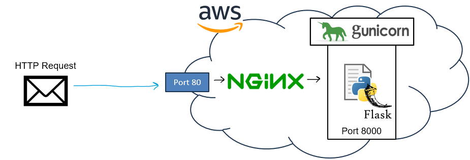

Programming Assignment Five: Fun Fact Cloud API
Assigned Wednesday November 20th
Due Wednesday December 11th @11:59 PM
GitHub Repo
You will use the same GitHub repo from PA1, PA2, PA3, and PA4. All of your files for this assignment (app.py, your fact file, and your testing script) should go inside a /PA5 folder
Overview
In this assignment, you will build a simple cloud application that serves as an API for fun facts. Your API should accept requests, and then return a certain number of fun facts of a topic of your choice. The API will also have another endpoint that will return information about the request.
Part 1: Creating your Flask App
You will build a Flask application (app.py) that will return fun facts from a txt or csv file. You should fill this file with ~15 fun facts.
Your Flask application should have two endpoints.
/fact will be an endpoint that will look at a custom HTTP header field called
Amount. This field represents the number of fun facts to be returned from the API. This will be a value between 1 and 10. It should select random fun facts from your file with no duplicates.
The other endpoint will be
/info. This endpoint will return a few different pieces of information. It should return the (1) current time to the user, (2) the user agent that issued the request, and (3) the HTTP transmission type (GET, POST, etc). You can use the
datetime module in python to get the current time. For the user agent and transmission type, those pieces of information can be found in the Flask
request object (
https://tedboy.github.io/flask/generated/generated/flask.Request.html)
Before moving to the next part, you should test your API locally, and make sure it functions properly before putting it on the cloud.
Part 2: Putting your application on the cloud
When you think you are ready, you will need to deploy your app on the cloud. You will use AWS (
https://aws.amazon.com/console/). Follow the steps from class to create an EC2 instance, and put your app.py + fact file onto the cloud machine.

You will need to use gunicorn and nginx to ensure your API can be accessed from the public internet. Assuming that you have a /pa5 folder in the home directory, here will be your gunicorn service file:
After installing nginx, you will need to configure nginx to forward requests from port 80 to port 8000
Part 3: Test your API
You will test your API in two different ways. You will use the
curl command, and you will write a short python script (that uses the
requests library) that will issue an HTTP request to your API. You will need to use both of these methods to test your
/fact and
/info endpoints for a total of 4 different sample outputs.
Programming Language
You need to use Python to write the Flask application, and Python to issue HTTP requests.
Input Files
None! You will create your fact file yourself. You will probably need to use google to come up with 15 fun facts about a certain topic
Sample output
Your output will be the output of the curl command and your testing script. You need to use curl to test
/fact and
/info, and a python script that tests
/fact and
/info (four outputs in total) Please watch the following video that shows a sample output for your cloud application:
https://youtu.be/zgRotSYNs9k
Hints
Follow along with the lectures from Nov 18 and Nov 20. They walk you through the hard parts of putting your API on the cloud.
Video Demo
You will need to record a video demo that shows your AWS instance running, running the curl command towards your AWS instance, and the output of your testing python script. You will put your video demo in a README in your /PA5 folder.
when the semester is over...
When the semester is over, you should delete and take down your EC2 instance to ensure you dont go over your free limit and have to pay money.
Partners
You are allowed to work with up to two partners. All members need to have their own repository (yes they will all have the same code).
Submission Info
BOTH MEMBERS MUST SUBMIT A REPO LINK TO D2L. All files should be pushed to your repository. You still need a README that contains the video link and information about your program.
Grading Rubric (100 Points)
| Requirement |
Points |
| Your Flask app has a /fact endpoint that returns N amount of fun facts specified by the "Amount" header |
30 |
| Your API does not return duplicate fun facts in a single request |
5 |
| Your Flask app has a /info endpoint that returns information about the request |
15 |
| Your app is running on an AWS EC2 instance with GUNICORN and NGINX running |
20 |
| A user can send curl requests to your API |
10 |
| You have a python script that send HTTP requests to your API |
10 |
| You have a PA5 folder on your GitHub with a video demo, your code, and a README |
10 |
Helpful Examples
Solution